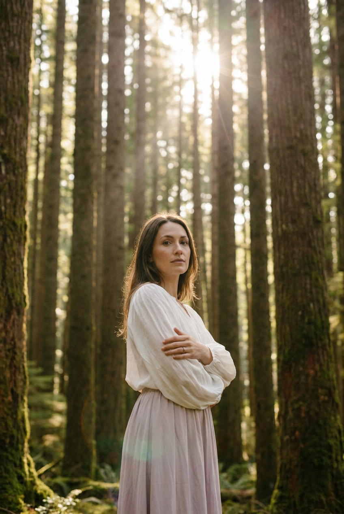
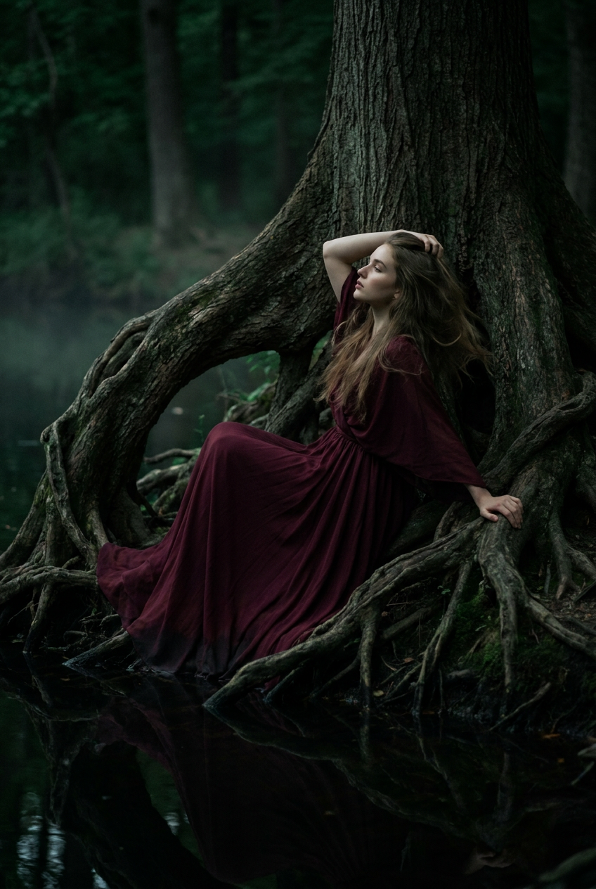
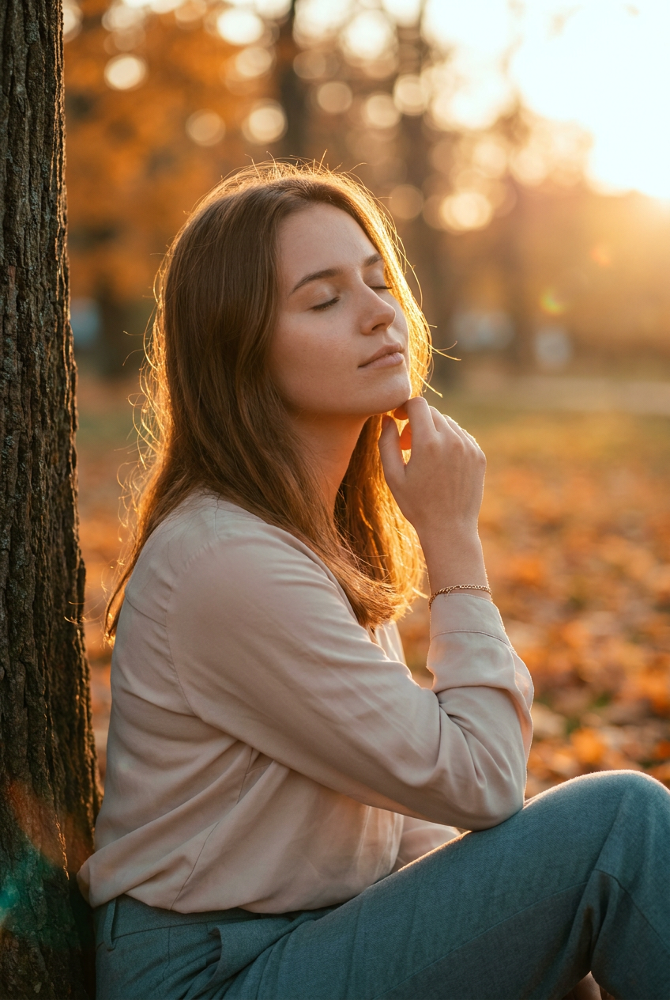
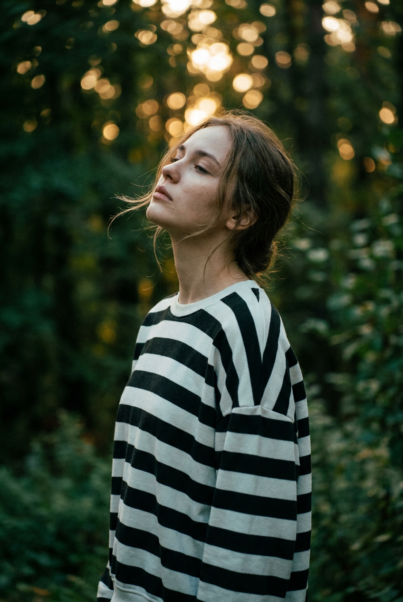
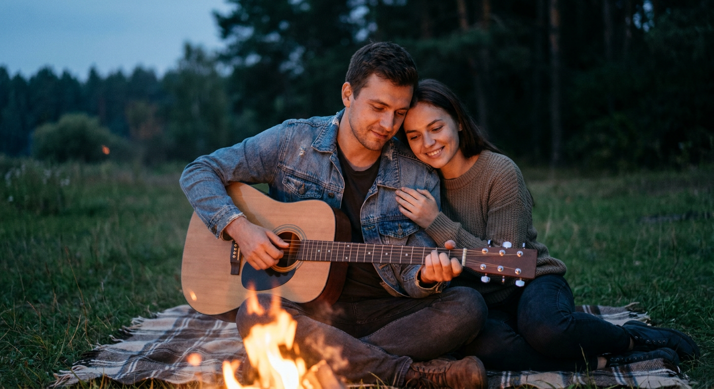
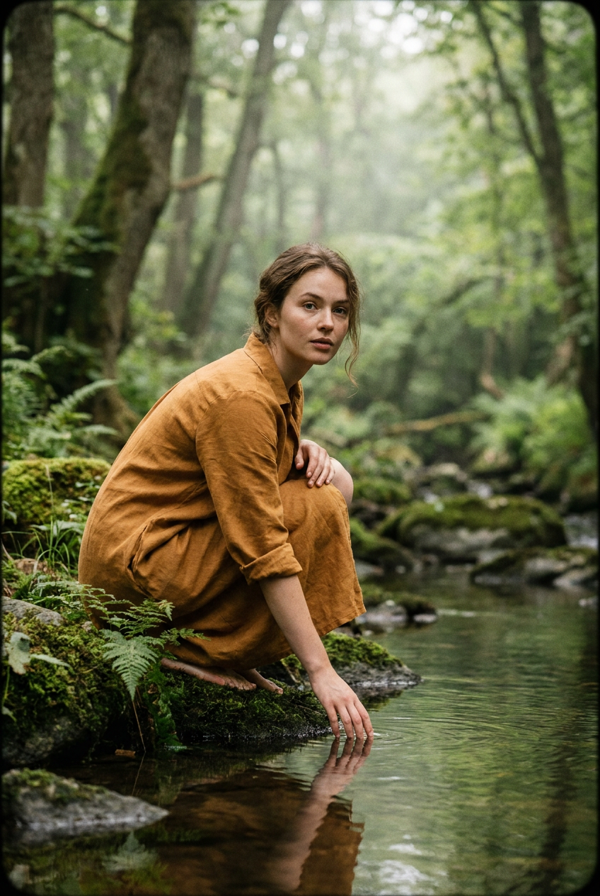
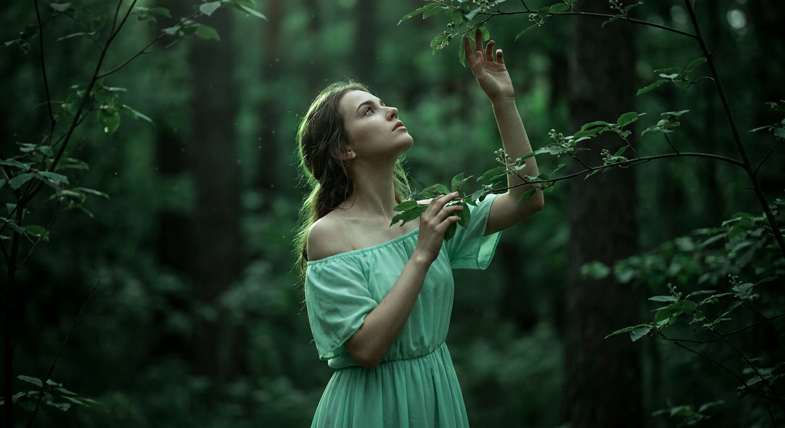
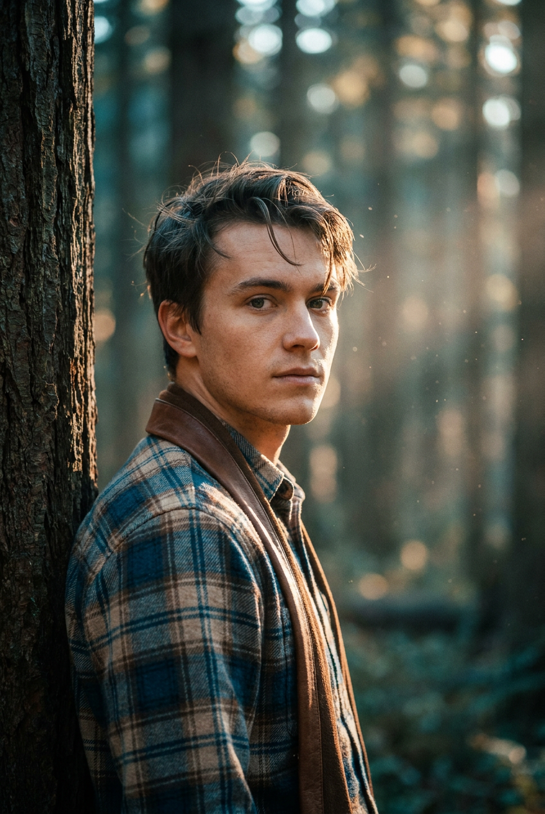
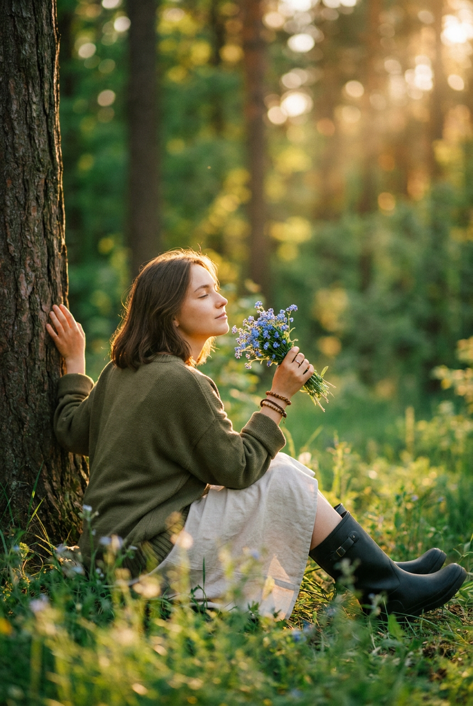

ИИ-фото в лесу: 9 промптов для нейросети

Лесной кадр легко превращается в случайный набор деревьев, невыразительный свет и неестественную позу. Генерация по подробному промпту помогает заранее задать композицию, настроение, одежду и поведение света, а референс лица — сохранить узнаваемость.
В подборке собраны 9 сценариев: от нежного портрета среди высоких стволов до сцены у костра, прогулки у воды и мужского крупного плана. Каждый промпт можно использовать как основу и адаптировать под сезон, одежду или формат публикации.
Как сгенерировать такое фото: пошагово
Нужен снимок анфас при ровном свете, лицо в кадре целиком, без тёмных очков и головных уборов. Разрешение от 1000 пикселей по короткой стороне. Чем чётче исходник, тем точнее модель повторит черты.
Выберите сценарий ниже и нажмите «Копировать» — текст уйдёт в буфер целиком, вместе с командой сохранения внешности. Эта команда стоит первой строкой и отвечает за то, чтобы на выходе было ваше лицо, а не случайное.
Кнопка «Сгенерировать» рядом с каждым промптом открывает модель в новой вкладке. Nano Banana Pro работает с референсом лица — в отличие от моделей, которые генерируют портрет с нуля и узнаваемость теряют.
Промпт — в поле ввода, портрет — через загрузку референса. Порядок значения не имеет, но без референса команда сохранения внешности работать не будет: модели нечего сохранять.
Для сторис и ленты берите 9:16, для превью и обложек — 4:3. Первый результат редко идеален: если поза или свет ушли не туда, поправьте соответствующую часть промпта и запустите заново. Обычно хватает двух-трёх итераций.
9 промптов для генерации
1. Нежный портрет среди стволов
Строго сохранить внешность по загруженному референсу: черты лица, пропорции, мимику и текстуру кожи без изменений. Фотореалистичный вертикальный портрет девушки в высоком лесу, где вверх уходят очень высокие прямые деревья. Кадр тихий, атмосферный, немного мечтательный. Героиня стоит по центру, корпус слегка повернут, руки мягко скрещены на груди; поза спокойная, закрытая и естественная. Взгляд направлен в объектив или немного мимо него, выражение нейтральное, мягкое, с лёгкой меланхолией. Лицо должно точно соответствовать загруженному референсу: сохранить форму лица, глаза, нос, губы, мимику, пропорции и натуральную текстуру кожи, не стилизовать внешность. На девушке лёгкая белая блуза с объёмными рукавами и длинная воздушная юбка пастельного оттенка. Ткань струится и ловит солнечные блики. Нежная романтичная минималистичная editorial-эстетика, естественный свет, малая глубина резкости, вертикальный формат 4:5.
2. Осенний кадр на скале

Строго сохранить внешность по загруженному референсу: черты лица, пропорции, мимику и текстуру кожи без изменений. Кинематографичная фотореалистичная осенняя сцена в густом лесу. Девушка сидит в центре на большом камне или обломке скалы, скрестив ноги по-турецки, ладони спокойно лежат на коленях. Передний план частично закрывают ветки и листья, сильно размытые в мягком foreground blur, словно снимок сделан сквозь растительность. Позади — высокие деревья, плотная зелень и спокойное боке. Лицо повторяет загруженный референс с точным сохранением формы глаз, бровей, носа, губ, овала, мимики и пропорций. На голове светлая серо-бежевая вязаная шапка-бини, лицо частично закрывают круглые солнцезащитные очки с тёмными линзами, из-под шапки выбиваются мягкие пряди волос. На девушке оверсайз-серый худи с длинными рукавами. Поза расслабленная, выражение спокойное. Осенний рассеянный свет, натуральная кожа, объектив 85 мм, диафрагма f/2.
3. У корней тёмной воды

Строго сохранить внешность по загруженному референсу: черты лица, пропорции, мимику и текстуру кожи без изменений. Фотореалистичный кинематографичный low-key портрет у воды в лесу. Девушка сидит или полулежит среди мощных переплетённых корней у берега тёмного пруда или медленной реки. Крупный ствол проходит вертикально через середину или правую часть кадра, а корни складываются в естественную арку вокруг героини. Она повернута к камере в три четверти спиной, почти в профиль, голова слегка наклонена к стволу. Одна рука поднята за голову, к виску, другая лежит на корнях или поддерживает тело через ткань. Поза художественная, но расслабленная; взгляд частично скрыт тенью, выражение лица спокойное. Лицо сохранить по загруженному референсу, включая индивидуальные черты, мимику, пропорции и естественную кожу. Волосы распущены. Глубокие тени, отражение тёмной воды, приглушённая палитра, мягкий боковой свет, объектив 50 мм, кинематографичный контраст.
4. Золотой час у дерева

Строго сохранить внешность по загруженному референсу: черты лица, пропорции, мимику и текстуру кожи без изменений. Фотореалистичный кинематографичный осенний портрет в золотой час. Девушка сидит или полусидит, прислонившись спиной к толстому стволу слева в кадре. Корпус развёрнут, голова повернута к солнцу справа; лицо немного наклонено, глаза закрыты или полуприкрыты, выражение умиротворённое. Одна рука согнута и поднята к лицу, пальцы легко касаются губ или подбородка. Справа на заднем плане виден силуэт дерева и тёплое освещённое пространство парка или лесной опушки. Черты лица точно повторяют загруженный референс: форма глаз, бровей, носа, губ, овал, пропорции, мимика и натуральная текстура кожи. Волосы получают золотую контровую подсветку, отдельные пряди выбиваются и слегка движутся от ветра. Мягкие тёплые тени, естественный цвет кожи, объектив 85 мм, f/1.8, малая глубина резкости.
5. Взгляд к небу

Строго сохранить внешность по загруженному референсу: черты лица, пропорции, мимику и текстуру кожи без изменений. Кинематографичный фотореалистичный портрет с настроением тихой меланхолии. Девушка стоит в парке или лесопарке среди густой зелени, показана в левом профиле по пояс или по плечи. Голова запрокинута вверх, взгляд направлен к небу, глаза полуприкрыты от света, губы расслаблены. Главный акцент — лицо и длинная шея; черты должны соответствовать загруженному референсу без изменения формы глаз, бровей, носа, губ, овала и естественной мимики. Волосы распущены, пряди обрамляют лицо и уходят назад, лёгкий ветер едва шевелит их. На девушке свободный оверсайз-свитшот или рубашка в чёткую чёрно-белую горизонтальную полоску, мягкая ткань слегка собрана на плечах, часть руки видна снизу. Деревья и кустарники на фоне сильно размыты. Естественный свет, мягкое боке, объектив 85 мм, f/2.
6. Вечер у костра вдвоём

Строго сохранить внешность по загруженному референсу: черты лица, пропорции, мимику и текстуру кожи без изменений. Фотореалистичная кинематографичная сцена вечернего отдыха пары на траве в парке или лесной поляне. Мужчина и девушка сидят рядом на пледе у костра. Девушка слегка наклоняется к нему и мягко касается его руки, мужчина играет на гитаре, опустив взгляд на инструмент. Между ними ощущаются близость, доверие и спокойное романтическое настроение. Использовать два загруженных референса лиц: сохранить узнаваемые черты каждого человека, не смешивать лица и не подменять их другими людьми. Костёр находится на переднем плане, оранжевое пламя даёт живые блики на коже, одежде и пледе, а вечерний воздух вокруг остаётся прохладным, сине-серым. На заднем плане — деревья, трава и мягко размытый пейзаж летней поляны. Натуральные позы, реалистичные руки, объектив 35 мм, f/1.8, тёпло-холодный контраст света.
7. Рука над тихой водой

Строго сохранить внешность по загруженному референсу: черты лица, пропорции, мимику и текстуру кожи без изменений. Фотореалистичная кинематографичная лесная сцена у тихого пруда или ручья. Девушка стоит на коленях у берега, корпус немного подан вперёд, голова опущена, взгляд направлен вниз, на поверхность воды. Одна рука тянется к воде, вторая опущена и помогает удерживать положение на колене. Настроение задумчивое и мечтательное, выражение лица мягкое, чуть грустное и сосредоточенное. Лицо повторяет загруженный референс с сохранением формы глаз, бровей, носа, губ, овала, пропорций, мимики и натуральной кожи. Волосы уложены естественно, лесной свет мягко ложится на лицо, вокруг глаз видны тонкие естественные тени. На девушке свободная тёплая коричнево-рыжая одежда оттенка охры или терракоты: платье, туника либо вещь с длинными рукавами и мягкой фактурой. Резкий фокус на лице и верхней части фигуры, фон максимально размыт, объектив 85 мм, f/2.
8. Среди листьев и бутонов

Строго сохранить внешность по загруженному референсу: черты лица, пропорции, мимику и текстуру кожи без изменений. Кинематографичный фотореалистичный портрет в тени густого зелёного леса. Девушка стоит среди листвы, слегка повернувшись в профиль, подбородок немного поднят, взгляд устремлён вверх, к листьям и бутонам. Одна ладонь поднята и касается верхней ветки, вторая рука поддерживает или придерживает её на уровне плеч. Поза мягкая и естественная, будто героиня остановилась вдохнуть запах леса. Лицо спокойное, губы расслаблены; внешность точно соответствует загруженному референсу, включая глаза, брови, нос, губы, овал, пропорции, мимику и реалистичную текстуру кожи. Волосы распущены, отдельные пряди подсвечены зелёным рассеянным светом. На девушке лёгкое летнее платье мятного или изумрудного оттенка. Ракурс три четверти или профиль, фокус на глазах, мягкие пятна света сквозь листву, объектив 50 мм, f/2.
9. Мужской портрет у ствола

Строго сохранить внешность по загруженному референсу: черты лица, пропорции, мимику и текстуру кожи без изменений. Фотореалистичный кинематографичный крупный план молодого мужчины в густом лесу. Он стоит, опираясь плечом на толстый ствол дерева слева в кадре, и развёрнут к камере в пол-оборота. Взгляд направлен к объективу, выражение спокойное, немного задумчивое. Голова и верхняя часть торса занимают большую часть изображения; особое внимание уделено глазам и натуральной текстуре кожи. Лицо должно точно повторять загруженный референс: сохранить форму лица, глаза, брови, нос, губы, мимику, пропорции и узнаваемость. Волосы слегка растрёпаны, несколько прядей падают на лоб. На нём клетчатая рубашка тёплых голубых, коричневых и бежевых оттенков с шерстяной или фланелевой фактурой; через плечи перекинут однотонный коричневатый кожаный ремень или шарф как верхний слой. Фон мягко размыт, естественный лесной свет, объектив 85 мм, f/1.8.
Что важно учесть в этом стиле
Лесной портрет держится на трёх вещах: понятной позе, направленном свете и глубине кадра. Если просто написать «девушка в лесу», нейросеть часто сделает плоский фон и случайное положение рук. Лучше указать, где находится ствол, что размыто на переднем плане и куда смотрит герой.
Для узнаваемого лица полезно отдельно описывать естественную кожу, пропорции и мимику, но не перегружать запрос десятками эпитетов. Для крупных планов подойдут 85 мм и f/1.8–2, для пары у костра — 35 мм, чтобы вместить окружение. Вертикальный формат 4:5 удобен для публикаций, а 16:9 — для обложек и широких сцен.
Идеи для вариаций
- Перенесите сцену в туманное утро, дождливый октябрь или морозный хвойный лес.
- Замените пастельную юбку на льняное платье, вязаный кардиган или длинный плащ.
- Добавьте отражение героя в воде, капли на листьях или тонкие солнечные лучи между стволами.
- Попросите нейросеть снять сцену на плёнку с лёгким зерном или, наоборот, сделать чистую журнальную фотографию.
- Для серии кадров меняйте только эмоцию и направление взгляда, сохраняя локацию и одежду.
Как собрать свой промпт
Начните с формата и типа кадра: крупный план, портрет по пояс или вертикальная сцена в полный рост. Затем задайте героя, точную позу, направление взгляда, локацию и время суток. После этого добавьте одежду, детали фона и способ освещения.
В конце укажите технические параметры: объектив, диафрагму, глубину резкости, цветовую температуру и соотношение сторон. Если используется референс лица, напишите, какие черты нужно сохранить. Для сложной сцены лучше сделать 4–6 генераций, а затем уточнить только слабое место: руки, лицо, свет или фон.
Ошибки, из-за которых кадр не получается
- Слишком общий фон. Формулировка «красивый лес» не задаёт глубину, поэтому уточняйте стволы, ветки, воду, поляну и степень размытия.
- Несовместимый свет. Не смешивайте холодную ночь, яркий полдень и золотой час в одном запросе.
- Сложная поза без опоры. Для рук указывайте, к чему они прикасаются: к корням, колену, ветке или руке другого человека.
- Перегруженное описание лица. Достаточно перечислить ключевые черты и естественную кожу, иначе модель начнёт менять внешность.
- Отсутствие ограничений. Добавляйте реалистичные руки, естественные пальцы, один источник света и отсутствие лишних людей в кадре.
Частые вопросы
Как сделать такое ИИ-фото бесплатно?
Для первых попыток подойдут Kandinsky и Шедеврум: они позволяют генерировать изображения без оплаты, но качество, очередь и доступные настройки могут меняться. Krea AI и Arena.ai удобны для сравнения вариантов, однако бесплатный доступ обычно ограничен скоростью, числом генераций или разрешением. Работа с референсом лица поддерживается не одинаково: где-то можно загрузить изображение напрямую, а где-то придётся описывать внешность текстом. Для точного сходства стоит проверить правила сервиса и сделать несколько вариантов.
Как сохранить сходство с человеком на референсе?
Укажите, что референс используется именно для лица, и перечислите форму лица, глаза, нос, губы, мимику, пропорции и текстуру кожи. Не добавляйте рядом противоречивые описания вроде «другая форма лица» или «сильно стилизованный портрет». Для пары загружайте два изображения и отдельно просите не смешивать лица.
Почему нейросеть меняет руки и пальцы?
Руки сложнее всего для генерации, особенно если они касаются воды, веток или другого человека. Упростите позу, опишите положение каждой руки и добавьте фразу «реалистичные кисти, правильное количество пальцев». Если лицо получилось хорошо, попробуйте перегенерировать только проблемную область в редакторе.
Как получить атмосферный свет в лесу?
Сначала выберите один сценарий освещения: золотой час, рассеянную тень, свет костра или холодный вечер. Затем укажите источник света и его эффект: контровое свечение на волосах, оранжевые блики на коже, мягкие тени под листьями. Объектив 50–85 мм и открытая диафрагма помогут отделить героя от фона.